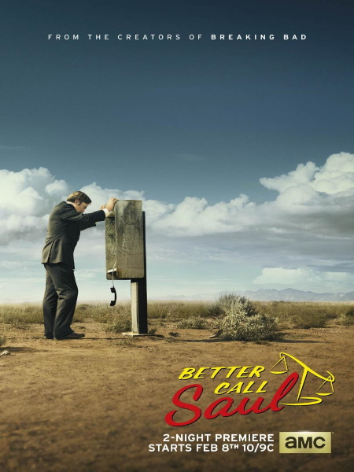
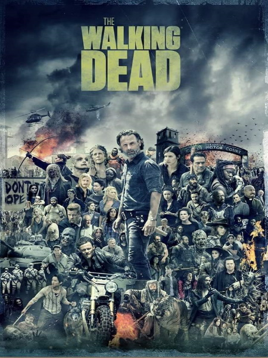
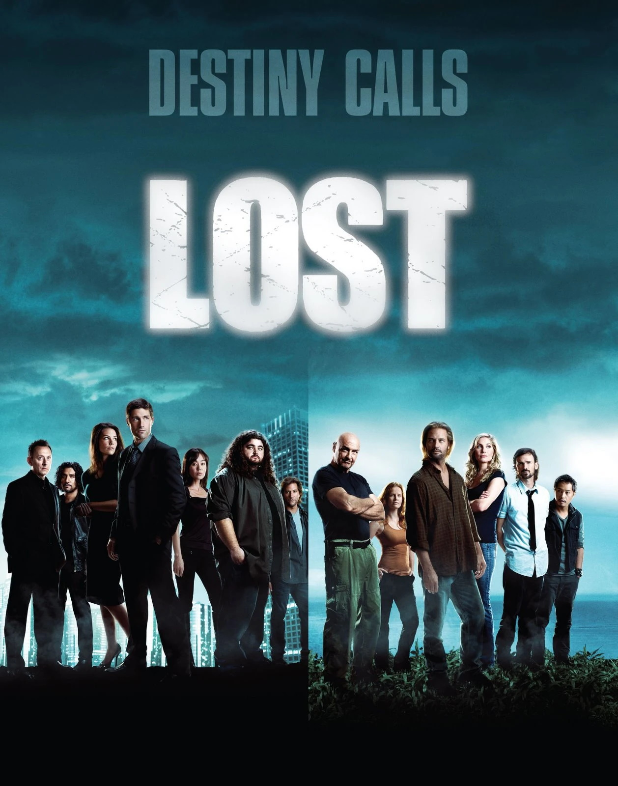
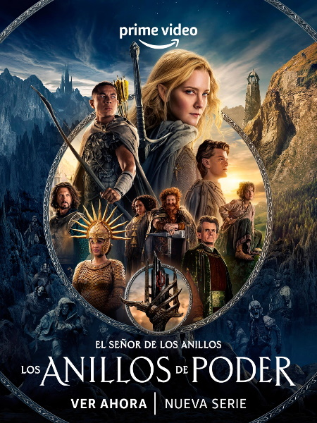
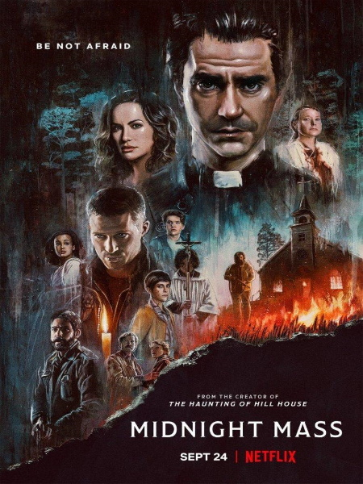
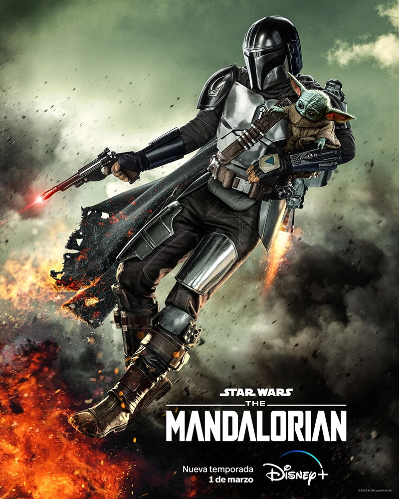

Breaking Bad
Un profesor de secundaria que ha sido diagnosticado con un inoperable cáncer de pulmón se dedica a producir y vender metanfetaminas con el fin de asegurar el futuro de su familia.
IMDb: 9.5
Donde ver:

Better Call Saul

Las vicisitudes del abogado penal Jimmy McGill en los años previos a su fatídico encuentro con Walter White y Jesse Pinkman.
IMDb: 8.9
Donde ver:
The Walking Dead

El ayudante del sheriff Rick Grimes despierta del coma para darse cuenta que el mundo está en ruinas y deberá liderar a un grupo de sobrevivientes para mantenerse con vida.
IMDb: 8.1
Donde ver:
 -
-
-
Lost

Los sobrevivientes de un accidente de avión son forzados a trabajar juntos para sobrevivir en una supuesta isla desierta.
IMDb: 8.3
Donde ver:
Los anillos del poder

Comenzando en un tiempo relativamente pacífico, acompañamos a un grupo de personajes mientras enfrentan el resurgimiento del mal en la Tierra Media. Desde las profundidades más oscuras de las Montañas Nubladas hasta el majestuoso bosque de Lindon, la imponente isla de Númenor y los rincones más lejanos del mapa, estos reinos y personajes darán lugar a legados que perdurarán en el tiempo.
IMDb: 6.9
Donde ver:

Misa de medianoche

Narra la historia de una comunidad aislada, cuyas diferencias aumentan con el regreso de un joven desacreditado y la llegada de un sacerdote carismático.
IMDb: 7.7
Donde ver:
The Mandalorian

Sigue la labor de un solitario pistolero en los confines de la galaxia, lejos de la autoridad de la Nueva República.
IMDb: 8.7
Donde ver: